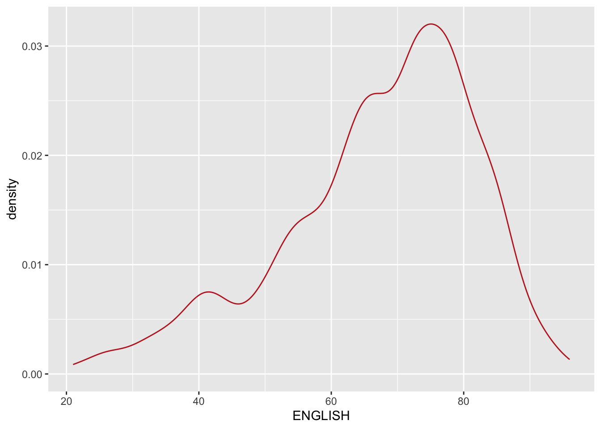
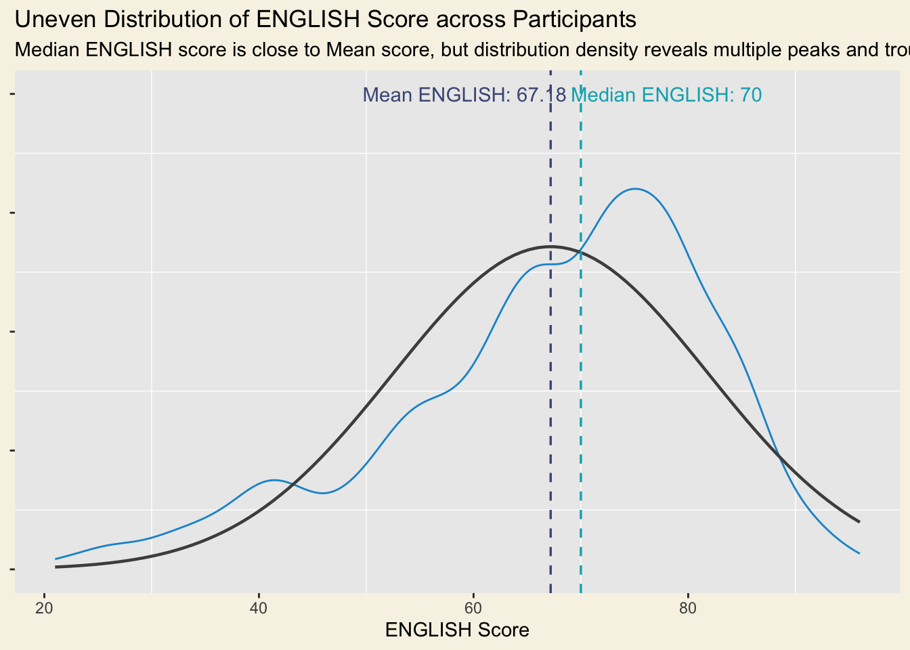

pacman::p_load(tidyverse, ggdist, ggthemes, colorspaces, ggridges)InClassEx2
install.packages("BiocManager")
The downloaded binary packages are in
/var/folders/9x/2w2wmv3s5fxgypwr25b2nrt40000gn/T//RtmpxX72Xn/downloaded_packagesexam_df <-read.csv("~/Desktop/Exam_data.csv")ggplot(exam_df,
aes(x=ENGLISH)) +
geom_density(
color = "#BF2626",
adjust = .65,
alpha = .6 #0-1 of darkness
)
median_eng <- median(exam_df$ENGLISH)
mean_eng <- mean(exam_df$ENGLISH)
std_eng <- sd(exam_df$ENGLISH)
ggplot(exam_df,
aes(x = ENGLISH)) +
geom_density(
color = "#1696d2",
adjust = .65,
alpha = .6) +
stat_function(
fun = dnorm,
args = list(mean = mean_eng,
sd = std_eng),
col = "grey30",
size = .8) +
geom_vline(
aes(xintercept = mean_eng),
colour="#4d5887",
linewidth = .6,
linetype = "dashed") +
annotate(geom = "text",
x = mean_eng - 8,
y = 0.04,
label = paste0("Mean ENGLISH: ",
round((mean_eng), 2)),
color = "#4d5887") +
geom_vline(
aes(xintercept = median_eng),
colour = "#00AFBB",
linewidth = .6,
linetype = "dashed") +
annotate(geom = "text",
x = median_eng + 8,
y = 0.04,
label = paste0("Median ENGLISH: ",
round((median_eng),2)),
color = "#00AFBB") +
labs(
title = "Uneven Distribution of ENGLISH Score across Participants",
subtitle = "Median ENGLISH score is close to Mean score, but distribution density reveals multiple peaks and troughs",
x = "ENGLISH Score") +
theme(
axis.title.y = element_blank(),
axis.text.y = element_blank(),
panel.grid.major = element_blank(),
plot.background = element_rect(
fill="#F8F3E6",
colour="#F8F3E6")
)